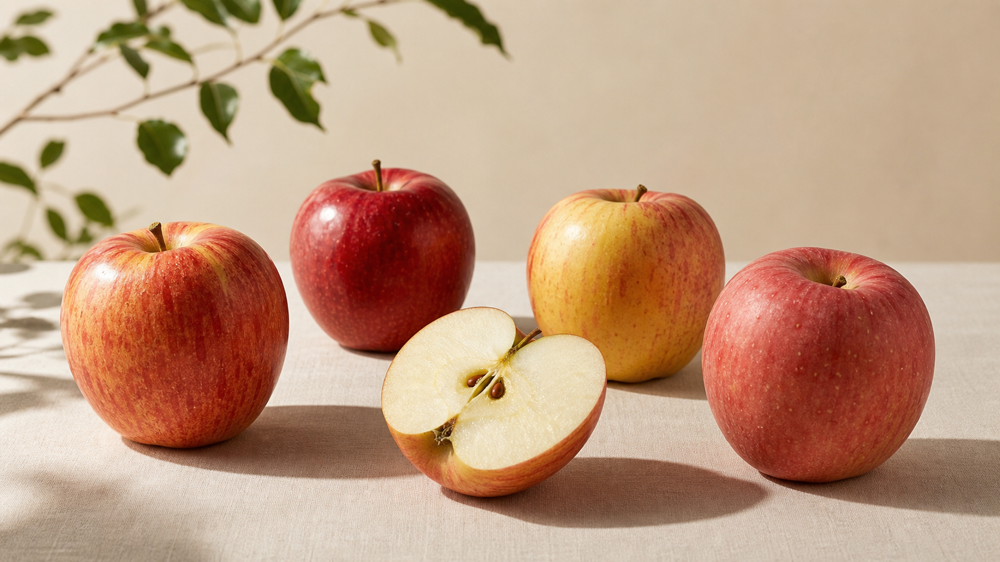

TSTC LAB · 2026.05.28
같은 사과인데 왜 느낌이 다를까?
우리는 같은 과일을 먹어도 서로 다른 부분을 기억합니다.

같은 사과를 먹고도 사람마다 다른 말을 합니다. 어떤 사람은 “달다”고 말하고, 어떤 사람은 “아삭하다”고 말합니다. 또 어떤 사람은 향이 좋았다고 기억하고, 누군가는 색이 예뻤다고 말합니다.
이 차이는 단순한 표현 차이가 아닙니다. 사람마다 과일을 받아들이는 입구가 다르기 때문입니다. 누군가는 맛으로 시작하고, 누군가는 향으로 시작하고, 누군가는 씹는 순간의 소리와 단단함으로 그 과일을 판단합니다.
같은 사과라도 사람마다 먼저 닿는 감각은 다릅니다.
그래서 과일을 추천할 때 “사과 좋아하세요?”라는 질문만으로는 부족합니다. 단단한 사과를 좋아하는지, 향이 은은한 쪽이 편한지, 산미가 조금 있어야 손이 가는지, 색이 선명해야 기대가 생기는지까지 봐야 합니다.
TSTC는 과일을 네 가지 감각 축으로 나눠 사람의 반응을 봅니다. 목적은 사람을 분류하는 것이 아니라, 과일 경험을 더 정확히 이해하는 것입니다.
과일코디네이터가 필요한 이유도 여기에 있습니다. 같은 사과를 두고도 누구에게는 선물용이 되고, 누구에게는 아이 간식이 되고, 누구에게는 피곤한 날 먹기 부담스러운 과일이 될 수 있습니다.
과일은 하나지만 경험은 하나가 아닙니다. 대한과일협회가 만들고 싶은 기준은 바로 그 차이를 말할 수 있는 언어입니다.